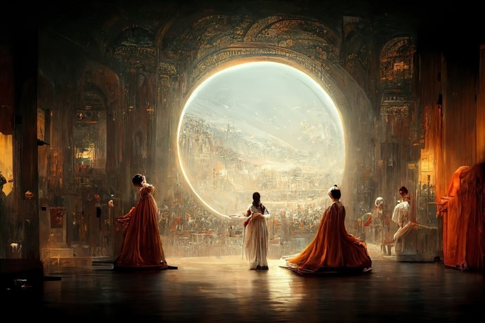
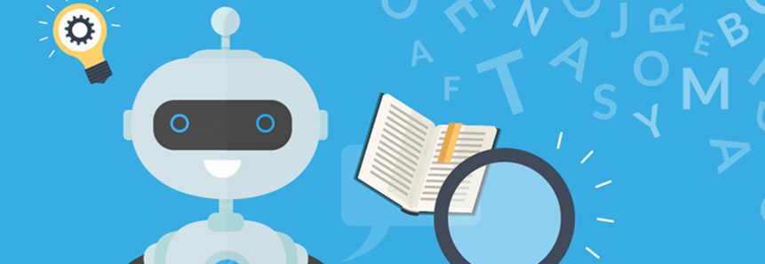

Index
Pagina 2
Pagina 3
Pagina 5
Fama de la Inteligencia Artificial
Las IA para ilustración hace ya unos años que están desarrollándose pero saltaron a la fama el mes de agosto pasado después de que una pieza de arte digital creada por una IA ganara un concurso en la feria estatal de Colorado en Estados Unidos. Presentada por Jasón Allen.

Ventajas de la Inteligencia Artificial
Las ventajas utilizar una página de arte por IA es que automatiza los procesos de dibujos con mayor precisión y menos errores que comentemos los humanos al momento de dibujar, también reduce el tiempo empleado en una obra de arte.
Además una IA tiene la capacidad de aprender para mejorar sus obras, tanto como mejorar los trazos de la obra anterior, los colores, la iluminación, las formas, los realismos, las sombras, etc.
